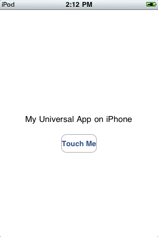
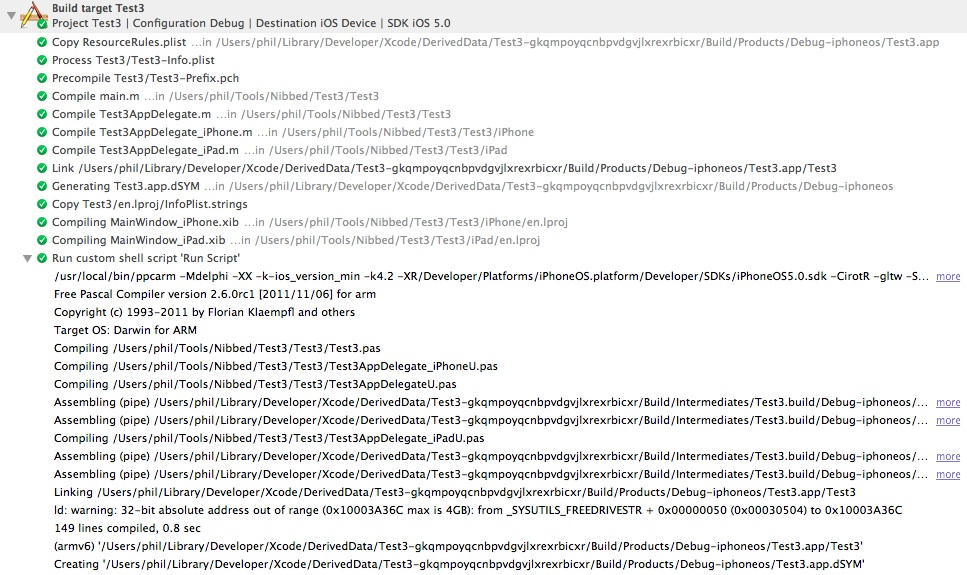

Developing with Objective Pascal
Part 4: iOS Devices and Xcode 4
Contents
Introduction
Requirements
Compiling Pascal iOS headers for ARM
Obtaining a provisioning profile for your app
Running your app on an iOS device
Reviewing the build log
Next steps
Introduction
These notes describe how to compile an Objective Pascal Cocoa Touch app with
the Free Pascal ARM cross-compiler and run the app on an actual iOS device.
You should already have installed Xcode 4 and reviewed
Part 1, Part 2
and Part 3.
Requirements
- See Part 3 for basic requirements.
- Free Pascal cross-compiler version 2.6.2 for iOS ARM devices. An installer
is available here: ftp://freepascal.stack.nl/pub/fpc/dist/2.6.2/i386-macosx/.
- Compiled Pascal iOS headers. See next section.
- Provisioning profile from Apple for your app. See section below.
Compiling Pascal iOS headers for ARM
In Part 3, you parsed the iOS headers to create the source for the iPhoneAll
unit and compiled the unit for use with the iOS Simulator compiler. Now you need
to compile it for use with the ARM cross-compiler.
- Change to the folder where the iPhoneAll source files are located.
For example:
cd /Developer/ObjectivePascal/utils/uikit-skel/src
- Now compile the iPhoneAll unit:
./compile-arm.sh iPhoneAll
Using the script included with the header parser ensures that the compiled
object (.o) files contain both armv6 and armv7 code.
- Copy the compiled files to where your project will look for them.
The Cocoa Touch template assumes that the compiled iPhoneAll files for
ARM are in the following location, although you can place them wherever you want
and just edit the path in your project settings:
/Developer/ObjectivePascal/units/arm-darwin
Here are the files you need to copy:
iPhoneAll.o
iPhoneAll.ppu
AnonClassDefinitionsUikit.o
AnonClassDefinitionsUikit.ppu
Obtaining a provisioning profile for your app
Creating a provisioning profile may seem confusing at first, but all you're
doing is tying together three things: a developer, a device and an app.
Requiring a provisioning profile helps protect the user from malware and helps
protect you from getting ripped off by software pirates.
Tip: The following steps describe how to manually create
and download a profile. For many apps you can also let Xcode do automatic
provisioning. For more information, see
Apple's docs.
- Log into the iOS Dev Center. Note you must be a iOS Dev Center member
to log in.
http://developer.apple.com/devcenter/ios/index.action
- Click the iOS Provisioning Portal link.
- If you haven't done this previously for yourself, obtain an iOS Development
Certificate.
- If you haven't done this previously for your iOS device, obtain a Device ID.
- Create an App ID for your app.
- For the Description, enter the name of your Cocoa Touch project. For example,
with the Part 3 example project, enter Test3.
- For the Bundle Identifier, just open your project in Xcode and look in your
project-Info.plist file to see what to use for the first part of the identifier.
For example, if it starts with "com.mycompany", enter com.mycompany.Test3
as the Bundle Identifier.
- Click Submit.
- Create a new Provisioning Profile.
- For Profile Name, enter a name for the profile, for example ObjP_Test3.
- For Certificates, check your name.
- For App ID, select the App ID you created in the previous step.
- For Devices, check your device that you want to run the app on.
- Click Submit.
- Download the provisioning profile.
- On the Provisioning page, you'll see your new profile listed, followed by
"Pending". After a minute or two, the status will change to "Active".
- Click Download. This will download your provision's file, for example
ObjP_Test3.mobileprovision.
- You can now log out of the iOS Dev Center.
Running your app on an iOS device
- Open your project in Xcode.
- If you manually created a profile, drag and drop the downloaded provision
file onto Xcode's icon on the Dock.
This will bring up Xcode's Organizer, where you should see the provisioning
profile listed.
- In Xcode, check the ARCHS setting on the target's Build Settings tab
to make sure you're compiling for the desired architecture(s). By default
the template sets ARCHS to armv6. If you're targeting iOS 5 or later,
change ARCHS to armv7 since all devices running iOS 5 can run armv7 code.
You can also set ARCHS to armv7 armv6 to include code for both
architectures in the same "universal" binary.
- Connect your iOS device to your Mac and unlock it by entering the
device's access code.
- In Xcode, select your device from the Scheme list, then choose
Product | Build to make sure Xcode can compile your app with the FPC ARM
cross-compiler.
Note: If you only see the generic iOS Device in the Scheme list, this probably
means there's a mismatch somewhere. For example, make sure your device's version
of iOS is equal to or greater than your project's deployment target.
- Choose Product | Clean, then Product | Run. Xcode will now build and
copy the app to your device and run it. The screenshot below shows what
it should look like on an iPhone or iPod touch.
Figure 4-1. Screenshot of Part 3's example app on an iPod touch.

Reviewing the build log
This illustration shows a typical build log for the example app
given in Part 3. Discussion follows below.
Figure 4-2. The Xcode 4 build log for an Objective
Pascal iOS app.

Here are some notes about several of the build steps shown in the log.
- Since the four placeholder ObjC files are listed in the target's
Compile Sources build phase, they still get compiled and linked.
- Generating Test3.app.dSYM - creates a package containing the executable's
DWARF debug information; located just above the app bundle.
- Compiling MainWindow_iPhone.xib and MainWindow_iPad.xib - creates
MainWindow_iPhone.nib and MainWindow_iPad.nib and copies them to the
app bundle.
- Run custom shell script 'Run Script' - launches Free Pascal compiler,
which compiles, assembles and links your Pascal code, creating the executable
file in the app bundle, overwriting the ObjC executable. Since the script also
echoes the compiler command line, you can see exactly what switches were passed
to the compiler (click "more" at the right to expand the output).
Note that even though the app is compiled against the iOS 5.0 SDK, the
Deployment Target was set to 4.2 in Xcode, resulting in the -ios_version_min
linker switch set to 4.2.
- Creating Test3.app.dSYM - overwrites the ObjC executable's debug info with
debug info from the Pascal executable. FPC can create this package with the -Xg
switch, but not with the expected name or in the expected location, so the Run
Script uses the dsymutil command to create it.
Note that we've compiled only for armv6 (as indicated in the previous
line).
Next steps
These four articles introduced quite a bit of material for two different
platforms (OS X and iOS) and three Pascal compilers (ppc386, ppcx64, ppcarm).
There's still a lot more to cover, but that's for future installments.
Copyright 2011 by Phil Hess.
macpgmr (at) fastermac (dot) net
First posted May 1, 2011; last edited Feb. 25, 2013.